The Itch
Skip Lester / Mad Dragon
I want to build the Bad Ass Amazingly Awesome Black Sheep, a cousin of BAAAHS that suffers fiery flatulence.
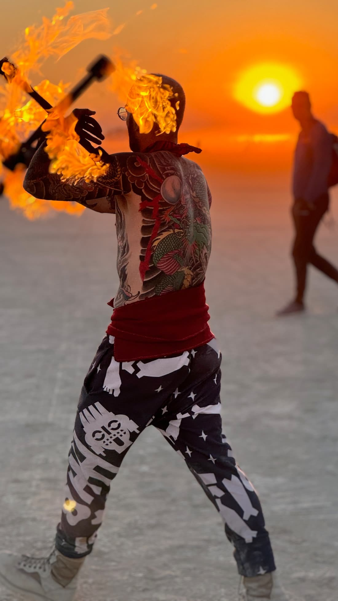
Team Outcast
I'm gay and I've been gay as blazes since I could walk. I was raised by career enlisted military parents. After 9/11, I joined the Marine Corps at 17. I served as an infantryman in Iraq on two deployments between 2006 and 2008.
Combat there shaped me in ways I’m still understanding. Honoring my fallen brothers remains both an honor and a duty, but I came to reject war and violence. With age I came to see us as pawns, and to recognize how much we shared with the people we called our enemy.
In my unit, I was a twink too gay for the Marine Corps. Among the gays of Hampton Roads, Virginia, where I went to high school, I was an outcast for being a Marine.
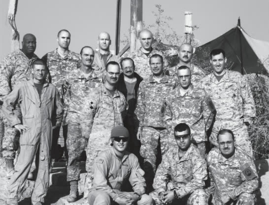
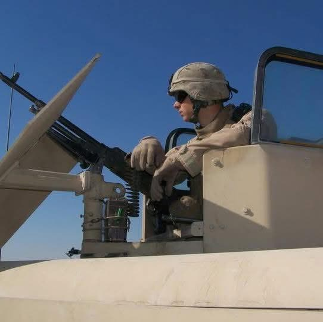
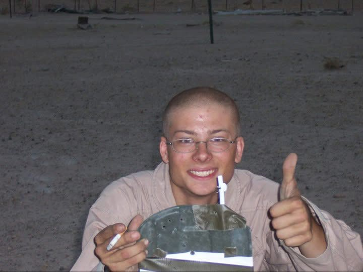
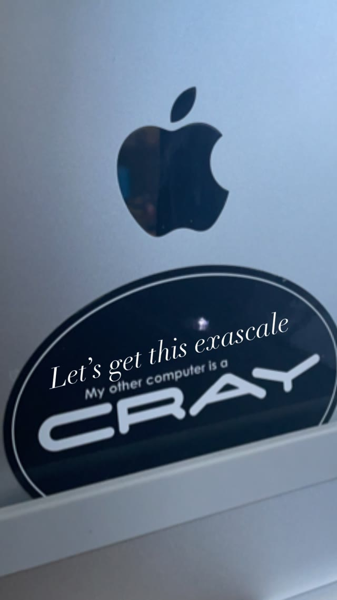
After the service, I studied math and computer science at the University of Washington Bothell. I volunteered as a math tutor and worked as a mathematics teaching assistant. I spent eight years as a software engineer, first at F5 Networks and then at Cray Supercomputers, where I did my proudest work.
I wondered if another Marine infantry veteran of the war in Iraq had ever sat where I was sitting. When the industry contracted, I faced another crisis of identity. Today, I’m an artist, welder, and painter. Relinquishing old identities is hard, and we cannot unlive our choices. At times I felt like some grotesque unicorn that no one could relate to.
The black sheep grew from that isolation: an artwork about finding belonging without sanding away what makes us different. Finally the tapestry of who I am no longer feels like a burden, but rather somehow a blessing.
Why troll BAAAHS?
It’s all love.
I came to BAAAHS for the disco and fell in love with the flock. I adore the queerness, the camaraderie, the irreverence, and especially the high-stupid. It takes a particular kind of people to dream up a giant disco sheep. My favorite thing about them is that they actually built her.
I kept coming back to the burn, first to dance and later to spin fire for her. After seven years of loving that sheep, I spent two years camping with her crew. On many nights, I had the honor of taking the wheel.
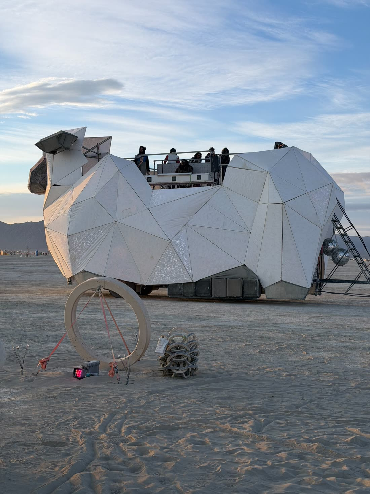
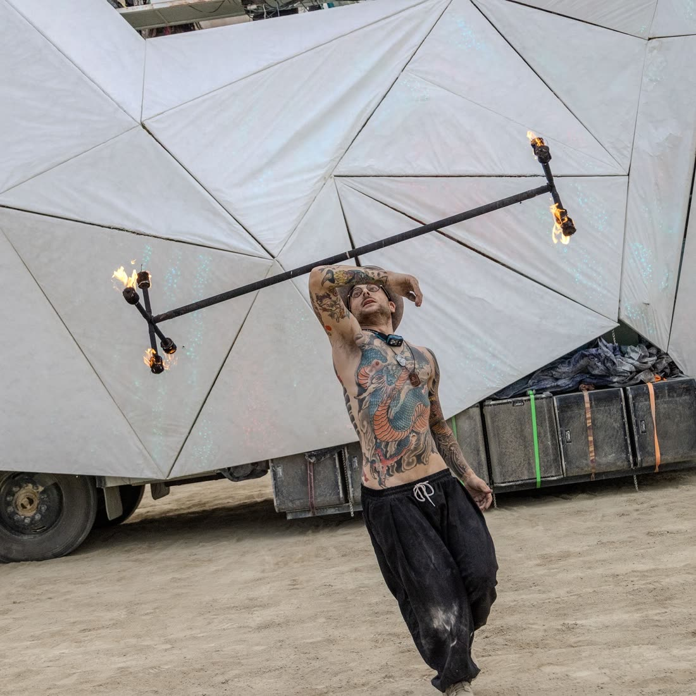
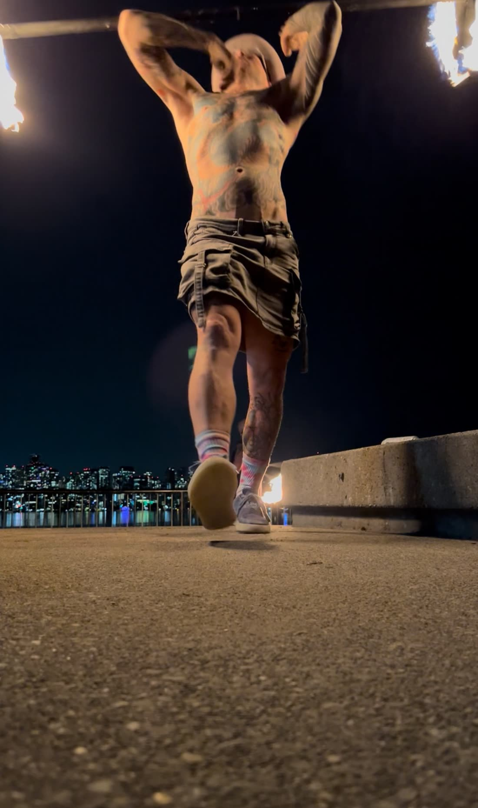
A Seattle relative
I think of BAAAHS as the San Francisco sheep. baaabs would be her Seattle relative. A little grungier, maybe more for the punks, but equally welcoming to all. I want to carry forward the love, connection, and queer joy I found there.
I am a fire spinner and poofer builder. I want my car to be a fire car. BAAAHS can’t toot fire with her Tyvek construction. I’m designing fire in from the start so that baaabs has propane farts.
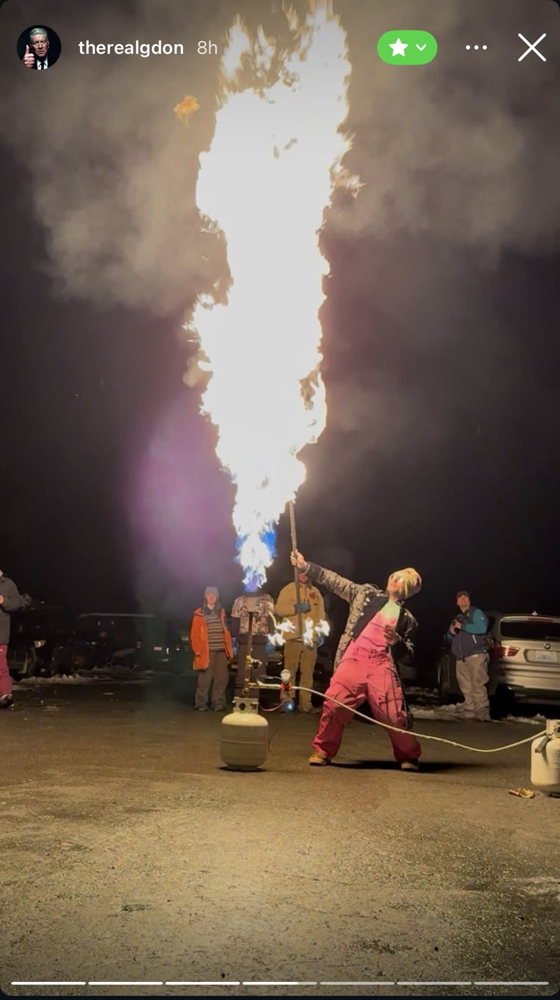
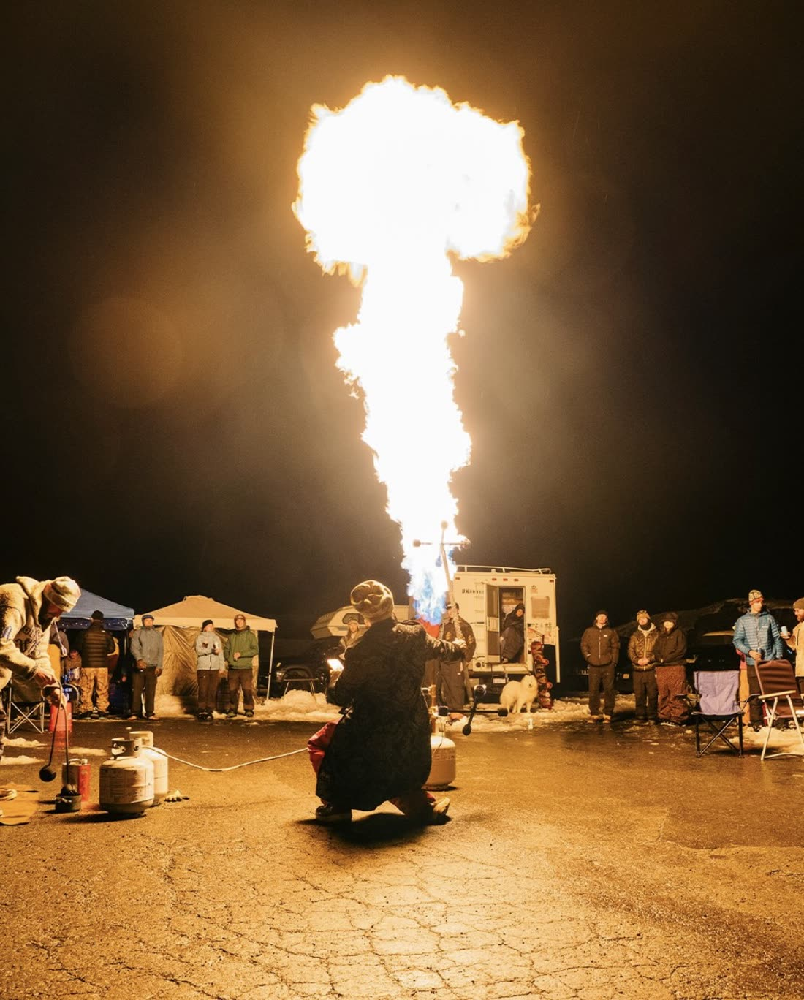
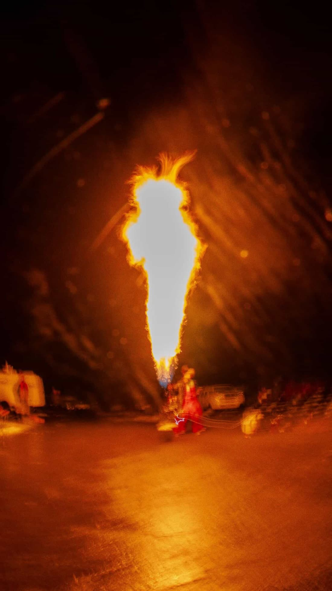
Healing by Fire
In my service I survived many close calls with IED blasts. Some were closer than others, and I am lucky to be alive and whole today, but I do suffer nightmares of these events. When I look out as I fire my poofers, I see the surprise, delight, and awe on peoples faces. It is a powerful antidote to my past trauma. I am grateful to wield power over something that has long wielded power over me.
“baaabs is a flammable art statement about finding self-love without first seeking approval.”